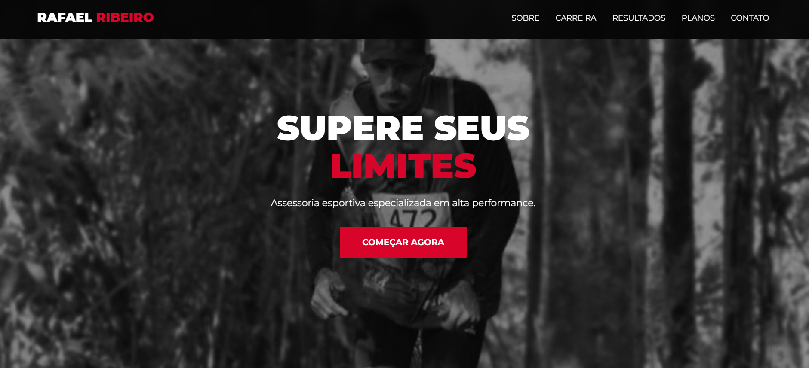
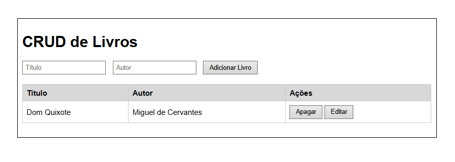
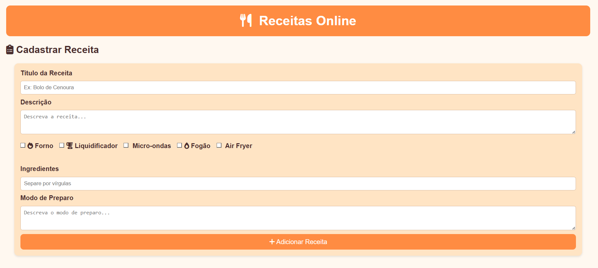
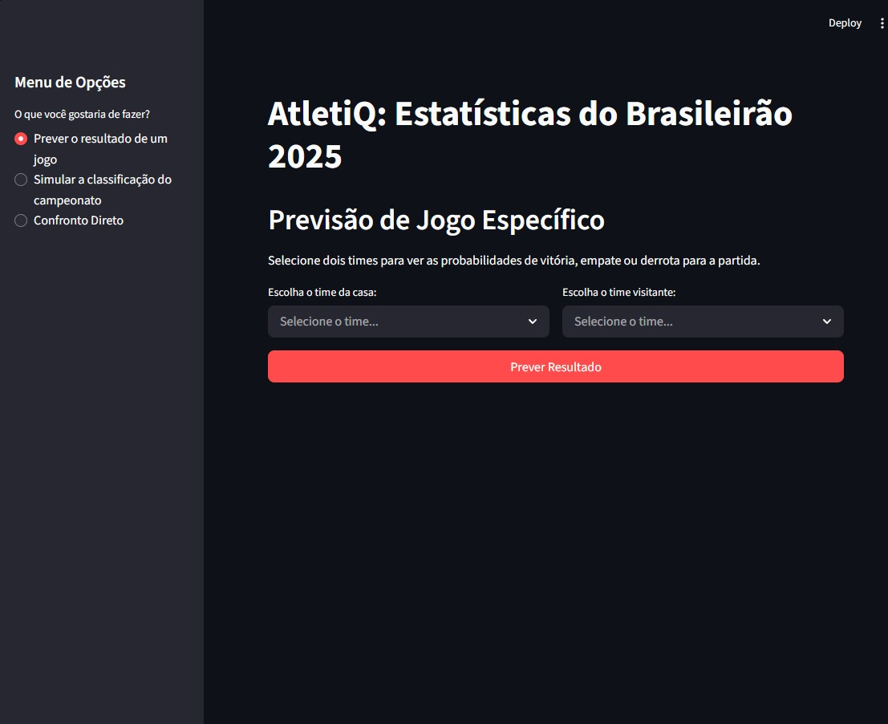
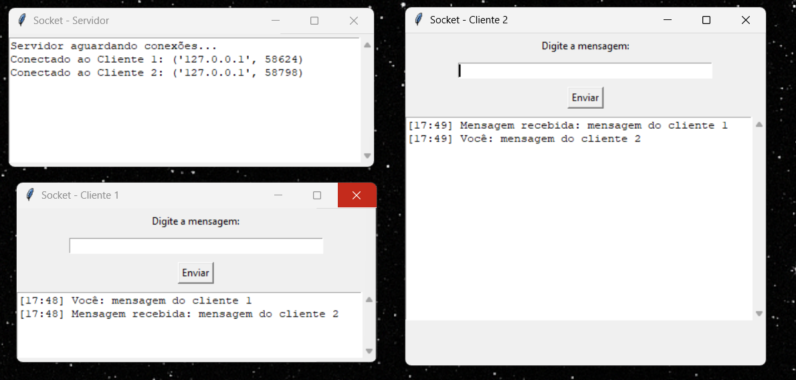

Transformando ideias em sites elegantes e funcionais
Entrar em ContatoDesenvolvedor web júnior, com formação e interesse contínuo na área de Tecnologia da Informação. Em constante aprendizado de novas ferramentas, metodologias e tecnologias, buscando evoluir tecnicamente e profissionalmente..
Atuo com responsabilidade, proatividade e comprometimento, aplicando na prática os conhecimentos adquiridos em estudos e projetos. Além do desenvolvimento, mantenho disciplina e organização no dia a dia, valorizando atividades que contribuem para equilíbrio, constância e desempenho profissional.
Fora do ambiente de estudos, mantenho uma rotina equilibrada com musculação e corrida, além de momentos de lazer com futebol e videogames, pois disciplina, constância e foco, valores presentes no esporte, também refletem diretamente na minha postura e desempenho profissional.
HTML5
CSS3
JavaScript
PHP
MySQL
Python
Excel
Responsável pela atualização de indicadores de controle de frota, criação de dashboards e relatórios estratégicos para o controle da empresa, além da emissão e gestão de requisições de compras.
Atuação no desenvolvimento de sites institucionais e landing pages personalizadas, com foco em performance, design moderno e experiência do usuário. Responsável pelo planejamento, estruturação, desenvolvimento front-end e integração com soluções como WhatsApp e formulários de contato, garantindo soluções sob medida para cada cliente.

Site criado para Personal Trainer Rafael Ribeiro, abordando sua história e serviços.
AcessarSite criado para Mariana Duarte, Perita Jurídica, abordando suas experiências e serviços.
Acessar
Gerenciamento de biblioteca (cadastro, edição, exclusão) com PHP e MySQL.
GitHub
Sistema CRUD simples utilizando armazenamento em arquivo .txt.
GitHub
Web scraping e Machine Learning com Python/Streamlit para o Brasileirão.
GitHub
Chat via TCP/IP com interface Tkinter e verificação hash MD5.
GitHubEstou disponível para novos projetos e oportunidades.